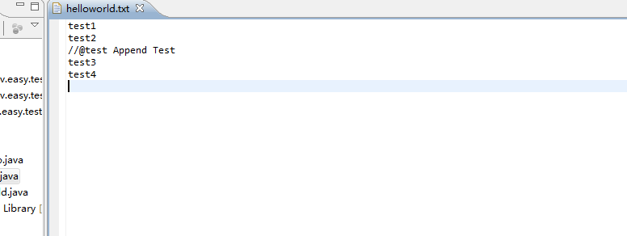
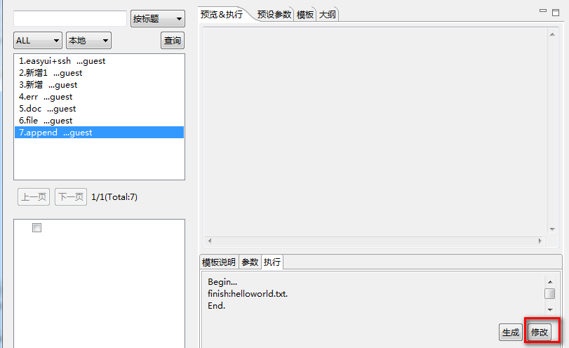
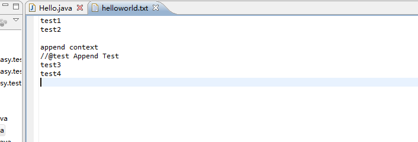

追加标签<ftl_append></ftl_append>.
追加标检是针对文件修改时需要用到的标签,即使用这个标签的前提是这个文件已经存在了，该标签必须要嵌套在<ftl_file/>中才起作用
标签工作原理:
如下例，程序执行时,先找到含有@test标记的行,然后在该标记的上开始添加<ftl_append>里的内容,该模板执行后，将在helloworld.txt里添加内容"append context"
执行前,hellowworld.txt内容

执行hellowworld.txt

追加标签要点击修改按钮才会执行，执行成功后，会在eclipse中自动打开修改过的文件。
